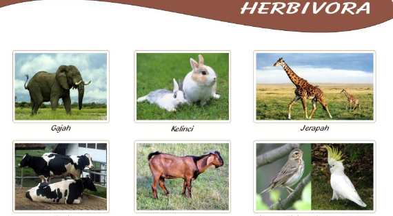
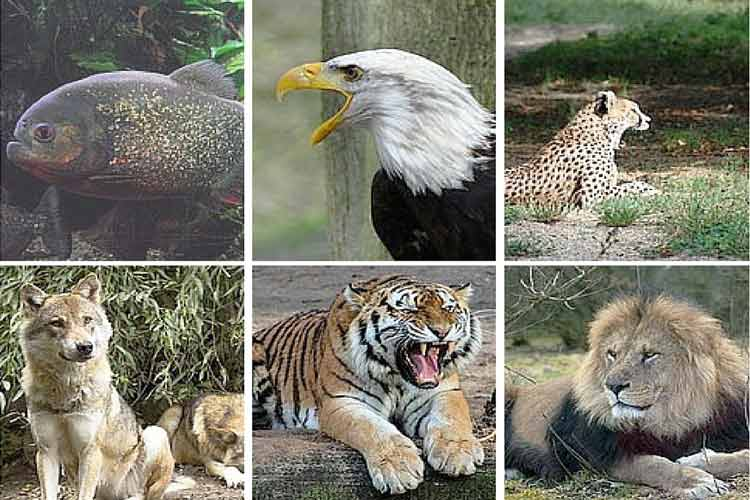
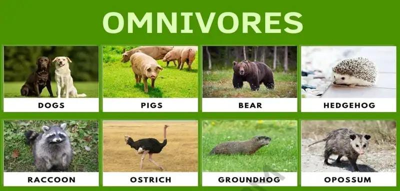

Herbivora

Herbivora terdiri dari dua kata,yaitu herba yang berasal dari Latin yang artinya tumbuhan-tumbuhan, sedangkan vora asalnya dari bahasa Latin yaitu vorare yang memiliki arti untuk dimakan atau disantap.Herbivora adalah hewan yang memakan tumbuhan,seperti daun,batang,ranting,buah,dan sayur-sayuran.Ciri hewan herbivora gigi herbivora berupa gigi seri dan gigi geraham yang lebar untuk menghaluskan makanan.
- Contoh hewan herbivora
- Sapi
- Kambing
- Rusa
- Kelinci
Karnivora

Karnivora adalah hewan yang memakan daging dan hewan lain.Kata karnivora berasal dari bahasa Latin, yaitu caro yang berarti makan.Ciri hewan karnivora, yaitu memiliki kuku dan taring yang tajam untuk berburu, berada di tingkat atas dalam rantai makanan.
- Jenis hewan karnivora
- Karnivor obligat: Hewan yang hanya bergantung pada daging untuk bertahan hidup
- Meso karnivora: Hewan yang memenuhi 50% kebutuhan nutrisinya dari daging
- Hypercarnivora: Hewan yang sekitar 70% makanannya adalah daging
- Hypokarnivora: Hewan yang hanya membutuhkan asupan daging untuk tubuhnya hanya sekitar 30% dari seluruh jenis makanannya
- Contoh hewan karnivora
Omnivora

Omnivora adalah hewan yang memakan segala jenis makanan,baik tumbuhan maupun daging.Istilah omnivora bersal dari bahasa Latin, yaitu omnis yang berarti segalanya dan vorare yang berarti makan.Ciri hewan omnivora memiliki susunan gigi yang beragam,yaitu gigi tajam untuk merobek daging dan gigi datar untuk mengunyah tumbuhan.
- Contoh hewan Omnivora
- Rakun
- Burung unta
- Beruang
- Ayam
>